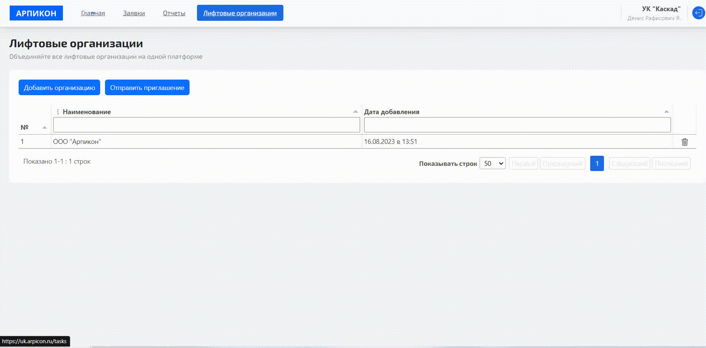
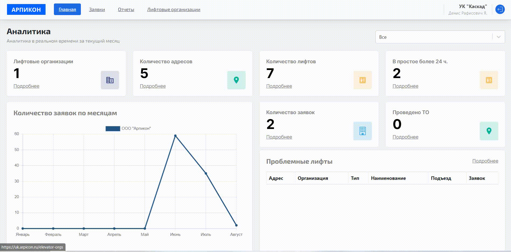
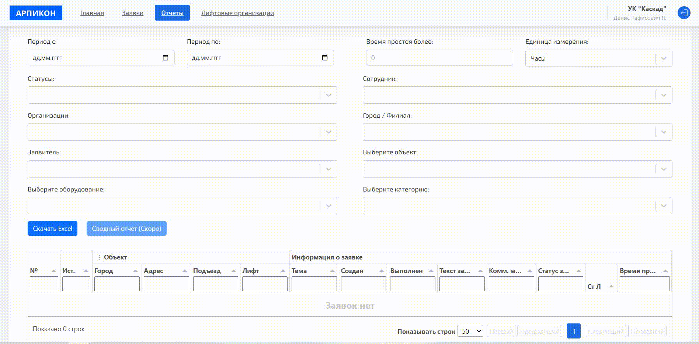

Запросите доступ к системе
Оставьте заявку в специальном окне
01Отслеживайте состояния своих лифтов в удобном формате
Для УК и собственников, которые на постоянной основе отслеживают состояния лифтов. Система поможет облегчить контроль всех процессов и отслеживать прозрачность в техническом обслуживании лифтов
Выведем всю аналитику
Сформируем отчеты
Поможем объединить лифтовые организации
При необходимости сделаем интеграцию
Проводите мониторинг работы лифтов в реальном времени, чтобы предотвратить аварийные ситуации и снижать время простоя.
Вы всегда будете знать, как работает каждый лифт, какие технические проблемы возникают,
какие поступаяют заявки и время реагирования на них.
Эта информация поможет вам принимать обоснованные решения на основе реальных фактов и предотвращать возможные сбои и поломки.
Не придется собирать отчетность и узнавать о деталях отдельно у каждой лифтовой организации. Благодаря системе вы сможете сами посмотреть статистику каждой организации и принимать соответсвующие решения. Если какая-то лифтовая организация не справляется с лифтом, вы можете передать контроль над ним другой организации.
Мы разработали интерфейс, к которому можно легко привыкнуть за минимальное количество времени. Пригласить лифтовые компании присоединиться к системе. Система работает в браузере — вам не нужно скачивать никаких сторонних программ
Например, страхование, освидетельствование и ежемесячные отчеты. Это позволяет вам быть в курсе всех произошедших изменений и контролировать состояния вашего лифта. Когда срок страхования или дата проведения осведетельствования подходит к концу — система автоматически предупредит вас.
Если у вас уже есть система для обработки заявок, вы можете сделать двухстороннюю интеграцию систем. Подключенная к Арпикон лифтовая организация автоматически будет получать заявки с вашей системы и обрабатывать ее через обращения
Оставьте заявку в специальном окне
01Он перезвонит в течении рабочего дня и пришлет ссылку на регистрацию
02Займет не больше 5 минут
03Это можно сделать в личном кабинете
04Никаких скрытых платежей и абонентских плат
Если вам нужно будет добавить какой-то функицонал — напишите нам и мы постараемся это реализовать
Попробовать